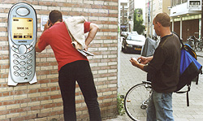

|  |  |  |  |  |
 |
A Closer Look Cell Phone Tour - Art Talk Satire common items found on Gouvernestraat in Rotterdam: stairs, people, doors, brick wall, hole in the wall; 5 recordings accessed by mobile phone; signs with instructions outdoor installation 2002 |
1."Right now you are witnessing a performance piece, a type of urban street poetry."The artist has shifted the arena for art out of the gallery and into the public domain by removing everyone on the opposite side of the street and replacing them with actors of similar stature. "You'll want to pay particularly close attention to the movements of the gifted actor passing by as that person subtly comments on a diversity of personal, social, and political issues." 2."In this interactive exhibit, the artist has chosen a practical means of temporarily transporting the participant via a series of small elevations from the ground towards the sky in order to increase general awareness of outer space, astrology, and the ozone." (text used for guerilla art in 2004)3."Famous artist Andy Warhol was known for finding and elevating the art of every day objects and situations.His Campbell's soup cans painting was the inspiration for this young sculptor, who in his work here, has stacked brick upon brick in classic Warhol style."  4."Interested in patterns of city movement, the artist has placed 142 doors on the ground level of Gouvernestraat."Those using the street will notice that each door is locked, representing blocked passage to another place. "This in turn causes viewers to visualize the keys to opening blocked areas of their own lives." 5."Interested in the spiritual quality of elements placed carefully within architectural structures, you'll notice the artist has strategically placed a hole in the midst of this graffiti-style sci-fi painting."Taking on the characteristic of ritual, viewers are encouraged to make a sacrifice by offering their mobile phones into the void." |
|
This cell phone (mobile phone) tour was made for the 2002 Rotterdams Fabrikaat - September in Rotterdam Festival. It's about the language used to 'talk about art.' Ever been in a museum or gallery and thought you knew what you were looking at only to read the artist's statement and discover it was something completely different? A friend read an article about a piece of art comprised of a huge, magnificent arrangement of full liquor bottles, which was left in a public park overnight. Of course the bottles were vandalized overnight, but the article described the experience in terms of the audience making an interactive socio-political statement. O.K. Ever see the Seinfeld episode where the cast starts talking in 'clothes catalogue language'? I wanted to play with 'art world language' ... it's sort of an art form in itself. So, I picked out 5 ordinary items on the Gouvernestraat where the festival was taking place: I wrote a short 'art talk' piece about each item. Each item had a sign with a telephone number to call to hear about the item. At the time, ISDN provided us with 5 different telephone numbers, one for each item. The answering service offered by KPN telephone allowed me to program our phone so that it didn't ring ... it went directly into voice mail ... and if 50 people called one number at the same time, they all would still hear the same 'art talk' message that I had recorded ahead of time. It was also possible to program the answering service so that people could not leave messages after they heard the 'art talk' message. |
{kind=link}